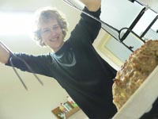

KŠMF, známá té� jako Kromìøí�ská, je neoficiální sraz úèastníkù minulıch i souèasnıch. Její mnohaletá tradice, od roku 2005, umo�òuje setkání ŠMFákù od kategorie studentù støedních škol, pøes matfyzáky a� k pracujícím. Tento sraz je tímto unikátní a zejména mladší úèastníci tak mohou snadno zjistit, kam vedou cesty po vystudování MFF.
Formou spoleèenskıch her podporujeme pøíjemné prostøedí pro všechny naše úèastníky. Program je nenucenı, ale ka�dı z nás jistì sem tam ocení, kdy� ho nìkdo "vytáhne ven". Pokud by sis rád odpoèinul od starostí, v prodlou�eném víkendu Ti naservírujeme prostøedí krásného mìsta Kromìøí�. Uká�eme Ti zámecké zahrady nebo spolu ochutnáme vıbornou zmrzlinu. Ve zbytku èasu si mù�eš zahrát deskovky, šarády èi jiné spoleèenské hry s lidmi, pro které je ŠMF dùle�itá jako rodina.
Jsme sraz bıvalıch úèastníkù a organizátorù ŠMF, to z nás dìlá komunitní spoleènost. Nicménì vìk, zvyky, ani jakákoliv jiná odlišnost pro nás v �ádném pøípadì není znamením, �e by u nás kdokoliv nebyl vítán. Pøesto�e jádro naší akce tvoøí lidé, co se znají od prvních srazù, jsme otevøeni nové spoleènosti a nekoušeme.
Na akci typicky máme volnì k dispozici sezónní burèák a nejsme restriktivní vùèi pití alkoholu. Souèasnì respektujeme plnì http://www.respektuj18.cz a netolerujeme nabízení alkoholu lidem mladším 18ti let. Rozhodnì však nepodporujeme, aby se kdokoliv cítil jakkoliv nepatøiènì, a� u� alkohol pije èi nikoliv. Máme mezi sebou jak veterány, kteøí sklenkou nepohrdnou, tak i abstinenty.
Místo konání: Kromìøí�, stálı objekt z posledních akcí (mapa)
Èas zahájení: ètvrtek 24. záøí 2026 v 18:00
Èas ukonèení: nedìle 27. záøí 2026 po obìdì
Kolik to bude stát: bude upøesnìno
Klasická šmfí vıbava, zdùraznìme snad jen šátek (šátek z KŠMF 2009 vıhodou!), bábovku, na vteøinu pøesnı chronometr (tøeba hodinky), bábovku nebo buchtu, pøezùvky, spacák. Nezapomeòte na bábovku. A samozøejmì cihlu (pokud se vám s ní nechce tahat, postaèí další bábovka). Karimatek netøeba, máme karimatrace.

Snídanì formou chleba plus nìco na nìj. Jeliko� je Mára odpùrcem chleba s marmeládou, budou asi i nìjaké pomazánky a tak.
Obìdy budou pravdìpodobnì opìt domluvené v restauraci.
O veèeøe se stará Mára.
Tìšíme se na Tebe v Kromìøí�i!
-{kind=link}
{kind=link}
{kind=link}
{kind=link}
{kind=link}
{kind=link}
{kind=link}